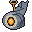

天と淵の
あいだ
BETWEEN THE SKY AND THE ABYSS
空を泳ぐ巨神の背に乗り、世界の底の謎へ。建築も採掘も、いつものままに。Climb onto titans that swim through sky, sea, storm and earth. Build and mine as you always do.
- Minecraft Java 1.21.1
- NeoForge 1.21.1
- v0.5.6 ベータ版v0.5.6 beta
- 1〜6 人1 to 6 players
はじめての人は、この順でNew here? Go in this order
- 導入するInstall jar を mods に入れて、新しいワールドを作ります。Put the jar in mods and create a new world.
- 遊び方を読むRead how to play 最初の 1 時間の流れと、操作キー。The first hour and the controls.
- 最初の巨神を知るMeet the first titan 岩鯨（一章）。空から垂れる鎖で背に乗ります。The Stone Whale (chapter 1). Board by the chain it lowers from the sky.
- 技と装備を選ぶChoose skills and gear 五つの木と旅人から、自分のビルドを作ります。Build your character from five trees and the Wayfarer.
ほかと違うところWhat makes it different
巨神の背が、そのままダンジョンA titan's back is the dungeon
巨神の背は、巨神自身と同じ形・同じ色のブロックでできた島です。順路の部屋は、背の上の離れた場所に建っています。Each back is an island of blocks shaped and colored like the titan itself. Its rooms stand apart on the back, one route after another.
一体につき一章One chapter per titan
心臓を止めると、巨神は眠りにつきます。次の巨神が現れ、章が進みます。倒れても持ち物は残り、墓が目印になります。Stop the heart and the titan falls asleep; the next titan appears and the chapter advances. Death never costs your key items.
作り込めるビルドBuilds with depth
5 つの技の木と旅人、36 の技、天職、刻印、要、型。武器との組み合わせで遊びが変わります。Five skill trees plus the Wayfarer, 36 skills, callings, runes, keystones and weapon types. Gear changes how you play.
静かな怖さと、仲間とQuiet dread, and company
序盤から、静かな不穏が少しずつ重なります（揺れや暗さは設定で弱められます）。6 人までのパーティで、背中の進みはパーティごとです。Subtle unease builds from the very first minutes (screen shake and darkness can be turned down). Play in a party of up to six; back progress is kept per party.
数で見るBy the numbers
できることWhat you can do
四体の巨神Four titans
空・海・嵐・地の中を行く巨神に、一体ずつ挑みます。Take on titans that move through sky, sea, storm and earth, one by one.
36 の技と天職36 skills, callings
5 つの木と旅人。天職を選び、刻印で技の形を変えます。Five trees plus the Wayfarer. Choose a calling and reshape skills with runes.
転生と深淵Rebirth and the Abyss
Lv 50 で転生し、魂盤と恩恵でビルドを作り直します。深淵の難度も。Rebirth at Lv 50, rebuild with the soul board and boons, then try Abyss difficulty.
13 種の武器13 weapons
型・六段の階級・特性・書き換えの武器。周回で揃えます。Types, six tiers, affixes and rewrite weapons. Collect them over repeat runs.
共鳴の炉Resonance Forge
強化・分解・再鍛造・交換。周回の報いを形にします。Enhance, dismantle, reforge, trade. Turn runs into gear.
旅嚢Travel Satchel
鍵・笛・素材は専用の袋へ。倒れても失いません。Keys, whistles and materials go into a dedicated satchel and survive death.
目的の帯と知らせObjective strip
チャットを流さず、画面の決まった場所に知らせます。No chat spam. Notices appear in fixed places on screen.

ゆるい死のペナルティSoft death penalty
地上で倒れると墓ができます。装備と大事な品は持ったまま復活。Die on the ground and leave a grave. You keep gear and key items.
6 人までのパーティParty of up to six
背中の進みはパーティごと。人数に合わせて敵が増えます。Back progress is per party. Enemies scale with the party.
町の案内と厩舎Town guide and stable
案内人が行き先まで灯りを引き、都の厩舎では乗り物を買えます。M の地図で場所を確かめられます。Guides light the way to any destination, and the capital's stable sells mounts. The M map shows where you are.
五つの章Five chapters
巨神 1 体につき 1 章。前の巨神の心臓を自分で止めた人だけが、次の巨神に乗れます。四体の心臓を返したあとは、地の底の深淵へ降ります。One chapter per titan. Only a player who stopped the previous heart can board the next titan. After the fourth heart, the way leads down into the abyss.


はじめるGet started
導入Install
NeoForge 1.21.1 と GeckoLib が要ります。jar を mods フォルダへ入れるだけです。Needs NeoForge 1.21.1 and GeckoLib. Drop the jars into your mods folder.
最初の 1 時間Your first hour
野営地で目覚めてから、最初の巨神が空に現れるまでの流れです。From waking at a camp to the first titan appearing in the sky.